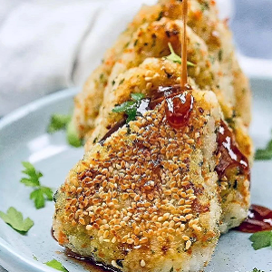

Ingredients
- 1-2 cups short grain rice
- 1 carrot, roughly chopped
- 1 cup baby spinach
- 1 tablespoon dairy-free butter
- salt and pepper, to taste
- 2-3 tablespoons sesame seeds
- 3 tablespoons soy sauce
- 1 teaspoon sesame oil
- 1 teaspoon chopped coriander
- 1 tablespoon corn starch
- 1 small red chilli, seeds removed, finely chopped
Instructions
- Cook rice according to the package directions.
- Place carrot and spinach into a food processor and pulse until finely ground.
- In a medium bowl combine cooked rice with carrot mixture.
- Shape tablespoons of the rice mixture into triangles and coat in sesame seeds.
- In a frying pan melt butter over medium heat and grill the rice balls on each side for a few minutes
until golden brown and crispy.
- In a small bowl combine soy sauce, corn starch, sesame oil, coriander and red chilli.
- Serve the balls warm with dipping sauce and enjoy!
Source Here